Gallery#
A figure from every model of the zoo, each made by running the model with a
fixed seed. The figures are drawn by tools/gallery/make_figures.py, one panel per model in
tools/gallery/panels/; rerun it (python tools/gallery/make_figures.py, the same in bash
and PowerShell) after changing a model.
Epidemiology#
Age-structured SEIR. Children, with the most contacts, peak first and highest.
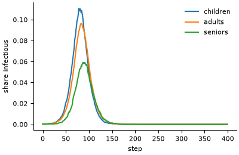
Vector-borne transmission. Outbreaks grow with mosquito density, in the order of the Ross-Macdonald R0.
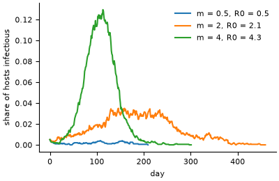
Ecology#
Forest fire. The burnt share jumps at the percolation threshold.
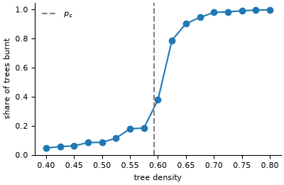
Energy budgets. After a boom and bust the population settles on the carrying capacity set by the energy balance.
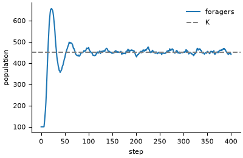
Economics#
Order book. Mid-price returns have fat tails compared with a normal distribution.
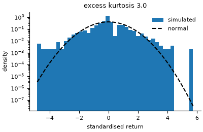
Boltzmann wealth exchange. Random exchange of money gives the Boltzmann-Gibbs distribution.
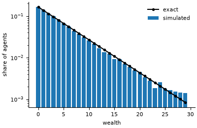
Bouchaud-Mezard. The Gini settles on the value of the inverse-gamma law, higher for noisier returns.
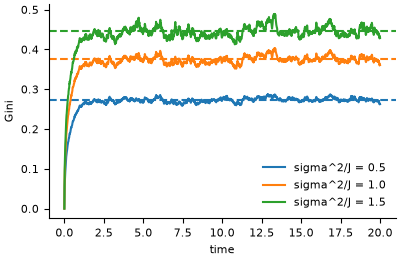
Sociology and political science#
Deffuant. Opinions merge into a few clusters.
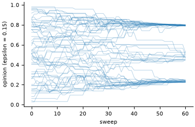
Hegselmann-Krause. Final opinions against the confidence bound: many clusters, fewer, then consensus.
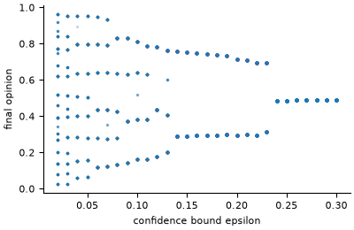
Axelrod. More traits per feature leave more cultural regions.
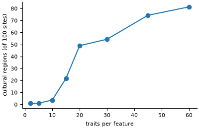
Transport and energy#
Nagel-Schreckenberg. The fundamental diagram, with and without random braking.
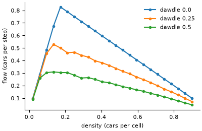
Bass diffusion. Adoption follows the Bass curve when mixing is complete, and lags on a sparse network.
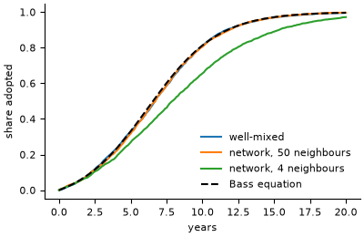
Submit your model#
The gallery is also open to community models built with Modelly that are not in the zoo.
Open a pull request that adds your model’s entry to this page under a section
“Community models”, with one PNG of at most 100 KB in docs/images/gallery/community/, and
fill in the template below in the pull request description. A gallery entry does not need
a validation test, but it must run from a seed and say how it was checked.
Title: one line
Author(s): names, and an ORCID if you have one
Field: epidemiology / ecology / economics / sociology / transport / energy / other
Repository: a public URL with the code, a licence and a README
Modelly version: the version it was run with (python -c "import modelly; print(modelly.__version__)")
Reference: the paper or report it reproduces or supports, if any
What it shows: two or three sentences
How to run it: the command that makes the figure, with its seed
How it was checked: an analytical result, a published figure, a comparison with another
implementation, or a test in the repository
Runtime: on a laptop, for the figure
The maintainers run the command before merging. Models that are validated, small and of general interest may be invited into the zoo.